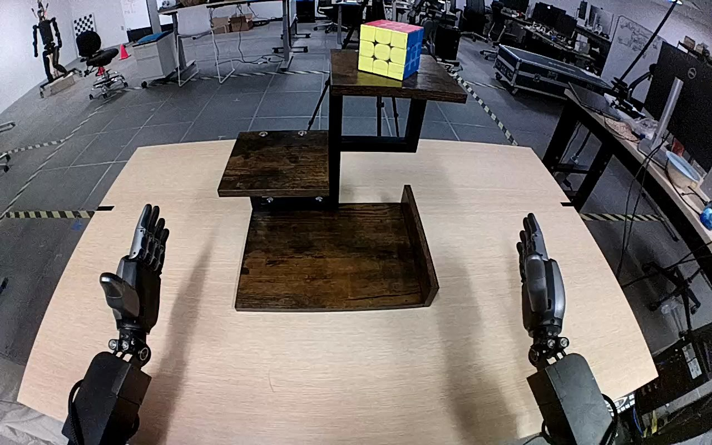

NVIDIA GR1 · 50
Video 50

Visual review action_review.json
{
"prompt_protocol": "humanoid_action_v1",
"prompt_provenance": "visually_authored_from_video_and_initial_frame",
"reviewed_contact_sheets": [
"sheet_001.jpg"
],
"inspected_frame_stride": 2,
"inspected_sampled_frame_count": 60,
"initial_scene": "A colored Rubik's cube sits upright on the top wooden shelf of a three-level stand. The bottom wooden shelf is empty; both robot hands are open below the stand in the robot-facing-forward camera view.",
"observed_sequence": [
{
"start_frame": 0,
"end_frame": 14,
"action": "Both hands are open below the stand; cube remains upright on the top shelf.",
"confidence": "high"
},
{
"start_frame": 15,
"end_frame": 40,
"action": "The anatomical right arm raises and reaches toward the top shelf; its hand opens around the cube while the left hand stays below without object contact.",
"confidence": "high"
},
{
"start_frame": 41,
"end_frame": 68,
"action": "Right fingers and thumb surround and close on the cube. The cube shifts slightly as the grasp settles while still over the top shelf.",
"confidence": "high"
},
{
"start_frame": 69,
"end_frame": 98,
"action": "The right hand lifts the cube off the top shelf and carries it outward and downward toward the bottom shelf; the top shelf is visibly empty by frame 76.",
"confidence": "high"
},
{
"start_frame": 99,
"end_frame": 111,
"action": "The right hand positions and lowers the upright cube onto the bottom wooden shelf near its front portion.",
"confidence": "high"
},
{
"start_frame": 112,
"end_frame": 119,
"action": "Right thumb and fingers open and the hand rises clear of the cube, leaving it upright and resting on the bottom shelf.",
"confidence": "high"
}
],
"arm_hand_roles": {
"right": "Sole manipulating hand: reaches to the upper shelf, grasps and lifts the cube, transports it downward, places it on the lowest shelf, and opens to release.",
"left": "Stays open below and left of the stand without contacting the cube or stabilizing the shelves.",
"coordination": "Single-hand manipulation; no hand-to-hand transfer or supporting contact."
},
"anatomical_side_evidence": "The initial native image looks forward from the robot between two paired forearms extending from the lower edges. The active arm can be continuously traced from the robot's lower-right side up to the top shelf; its opposing thumb and finger layout matches the right hand. The opposite forearm and open hand remain on the robot's left. This uses the body-centered paired-arm view and continuous forearm trace, corroborating rather than relying solely on the source instruction.",
"terminal_state": "The Rubik's cube rests upright on the bottom wooden shelf with red top, yellow front, and blue right side. The right fingers are open and lifting clear beside it; the left hand remains open without contact.",
"uncertainties": [
"Exact individual fingertip contacts during grasp and the first instant of bottom-shelf contact are partly occluded by the right hand; transport and final released resting state are visible."
],
"annotation_discrepancies": [],
"evidence_frame_indices": [
0,
40,
60,
76,
100,
112,
119
],
"selected_execution_status": "success",
"video_id": "50",
"dataset": "NVIDIA_GR1_100",
"dedicated_review_agent": "review_gr1_50",
"review_source_video": "NVIDIA_GR1_100/50/original/original.mp4",
"source_frame_count": 120,
"source_fps": 20.0,
"native_detail_frames": [
40,
60,
76,
100,
112,
119
],
"world_model_prompt": "The robot reaches up with its right hand, closes its fingers around the Rubik's cube on the top wooden shelf, and lifts it clear. It carries the cube down to the bottom wooden shelf, sets it upright, and opens its hand to leave the cube resting there. Keep the camera fixed; preserve robot geometry, physically valid joint motion, and normal gripper opening and closing.",
"original_task_instruction": "Use the right hand to pick up rubik's cube from top wooden shelf to bottom wooden shelf.",
"selected_segment": {
"start_frame": 0,
"end_frame_exclusive": 120,
"reason": "Complete original single-task reference; no cropping or trimming requested."
},
"source_video_sha256": "89d278f8096b39740c90d903e278fdca05ae4157fa9c978fd299d5857ea38224",
"review_completed_at": "2026-10-13T18:10:31.758216+00:00"
}